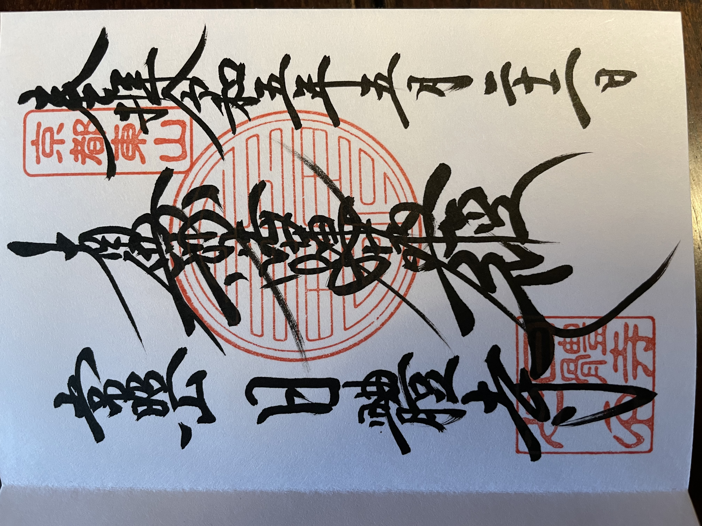

Goshuin
Meji Shrine (明治神宮)

Meju Shrine is located between Shibuya and Harajuku in Tokyo. This is the shrine where I bought my stamp book (御朱印帳) and recieved my first stamp. Take note, calligraphers will only write their stamp in your book if you purchase it from this shrine, otherwise they will provide a slip of paper with the stamp on it.
Hei Shrine (日枝神社)
Akasaka Hikawa Shrine (赤坂氷川神社)


Toyokawa Inari Betsuin (豊川稲荷東京別院)

Choanji (長安寺)


Hakone Shrine (箱根神社)

Shinsen-en Garden (神泉苑)

Zenkyo-an Temple (禅居庵)


Yasui Kompira-gū Shrine (安井金比羅宮)


Hōkan-ji Temple (法観寺)


Yasaka-jinja Shrine (八坂神社)


Chion-in Temple (浄土宗 総本山 華頂山 知恩教院 大谷寺)


Kiyomizu-dera (清水寺)
Nittaiji (日體寺)

Tenryu-ji (天龍寺)

Nonomiya-jinja Shrine (野宮神社)


Mikami-jinja Shrine (御髪神社)